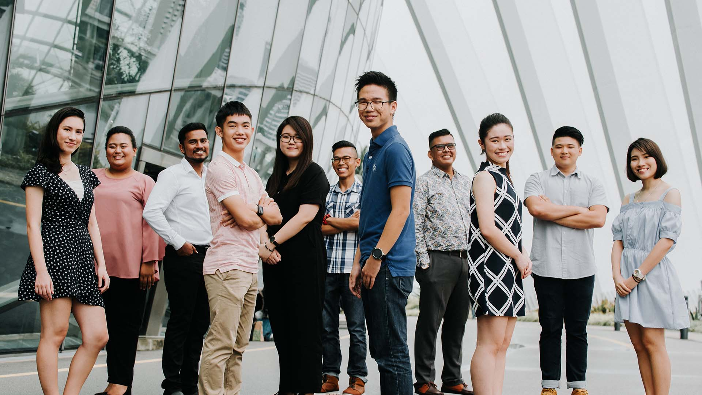

About
Just a short paragraph on ITE's background, Sep 2, 2017

ITE Teachers standing together for a picture. Credit: Google
ITE is and has always been about providing assistance to anyone who needs it, be it providing part time courses in order for the underprivileged to gain knowledge, to providing part time jobs for them to earn some income with the knowledge that they have obtained from the part time courses that they have attended.
We provide short courses for the underprivileged and students themselves, mostly consisting of online resources such as Datacamp, Codecademy and so on. We believe that with the increasing dependency on technology these days, they will be able to land themselves a job with the skills they have or will acquire from the attendance of all course lessons provided to them.